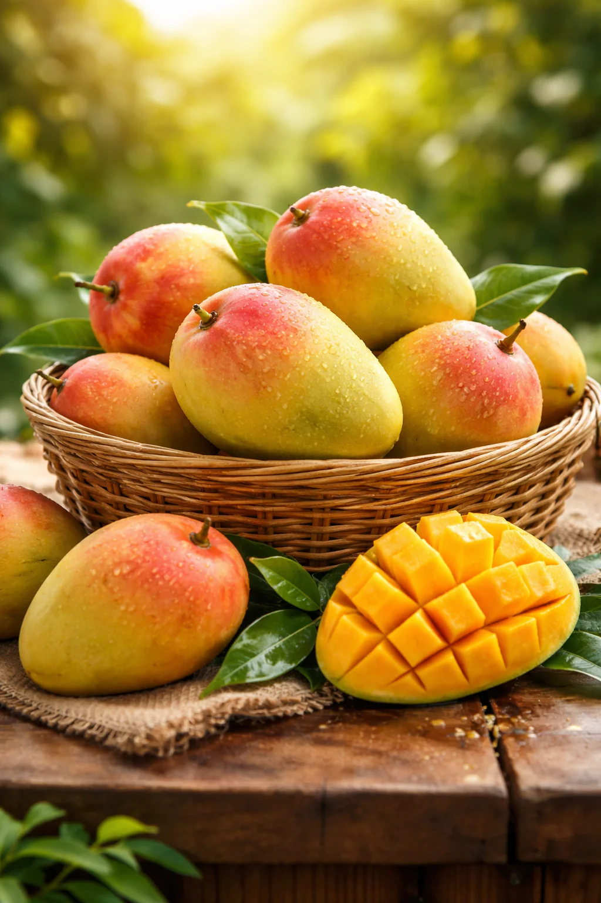

Gulabkhas ⭐
गुलाबखास (Gulabkhas)
An exceptionally elegant variety famous for its alluring rose-like aroma and a striking reddish-pink blush that spreads beautifully across its sun-facing skin.
Deeply embedded in the heritage orchards of Bihar, this early-to-mid season choice boasts a non-fibrous, deep-yellow pulp highly valued for premium table presentation.

Scan QR Code
⚖️ Variety Comparison: Nutritional Profile
| Variety | TSS Range (°Brix) | Glycemic Index (GI) |
|---|---|---|
| Gulabkhas ⭐ | 18.0–20.0 | 53 |
| Alphonso | 20.0–22.0 | 56 |
| Dashehari | 18.0–20.0 | 54 |
| Kesar | 19.0–21.0 | 53 |
| Totapuri | 15.0–17.0 | 51 |
* Parameters compiled from standard regional performance targets.
📊 TSS & Glycemic Index Comparison Analysis
🟢 Low GI (≤50)
🟡 Moderate GI (51–55)
🔴 High GI (>55)
Health Insight:
Gulabkhas offers a highly desirable, moderate Glycemic Index (53), pacing safely below high-GI commercial benchmarks like Alphonso (56) and perfectly mirroring Kesar (53). With a robust sweetness performance (**19.00 °Brix midpoint**), it successfully delivers an elite culinary experience with a fragrance that stands unrivaled across competitive regional cultivars.